Club Hub
The Club Hub initiative convenes leaders from various CS organizations to exchange advice and pool resources. By fostering collaboration among these groups, the Hub aims to strengthen the CS community and provide valuable opportunities for students to engage and network.
CS Club Fair
The CS Club Fair, held biannually by USB, serves as a collaborative platform for CS, DS, and AI clubs at Purdue University. This joint fair aims to streamline the process for students to explore and engage with various student organizations within these fields, fostering community and facilitating connections that enhance students' academic and professional journeys. We provide valuable insights, resources, and connections to support interests and aspirations in computer science, data science, and artificial intelligence.
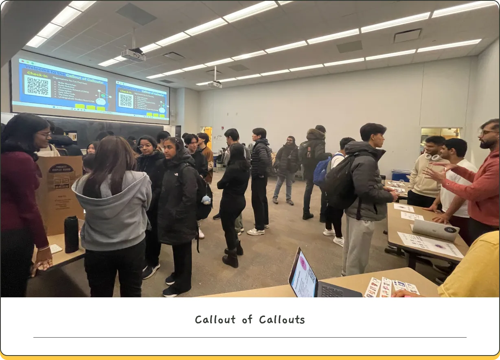
Clubs at Purdue
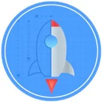
LaunchPad
LaunchPad is a community of students dedicated to learning, building, and growing together. We provide a one-on-one, semester-long mentorship program to help freshmen students hit the ground running. We pair each incoming student with a talented upperclassman who will introduce them to the CS/DS community at Purdue and guide them in creating a technical project of their choosing. Throughout the semester, we host events to foster a sense of community and to build technical skills. Our goal is to ensure that every incoming student is equipped with the knowledge and connections they’ll need to get the most out of their time at Purdue.
Undergraduate Student Board (USB)
The Computer Science Undergraduate Student Board exists to promote a supportive and engaged community within Purdue's Computer Science Department, and to use its relationship with faculty, the Corporate Partners Program, and administration to advocate for the student body. USB reduces the communication gap between students and faculty by representing student concerns, and runs initiatives like the Club Hub, the CS Club Fair, mentorship, panels, and the Student Wiki. USB is an application-based club — follow our Instagram for application announcements.
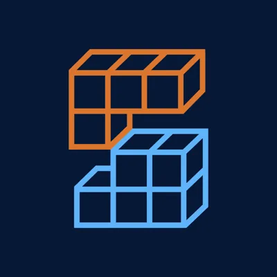
Purdue Stack
Purdue Stack is the premier software engineering club at Purdue University, dedicated to hands-on full-stack development and real-world applications. Our mission is to bridge the gap between classroom learning and industry experience by working on impactful projects for campus, businesses, and startups. We host technical workshops, collaborate with industry leaders, and provide networking opportunities, while structured project teams give members practical experience and room to grow as developers and leaders.
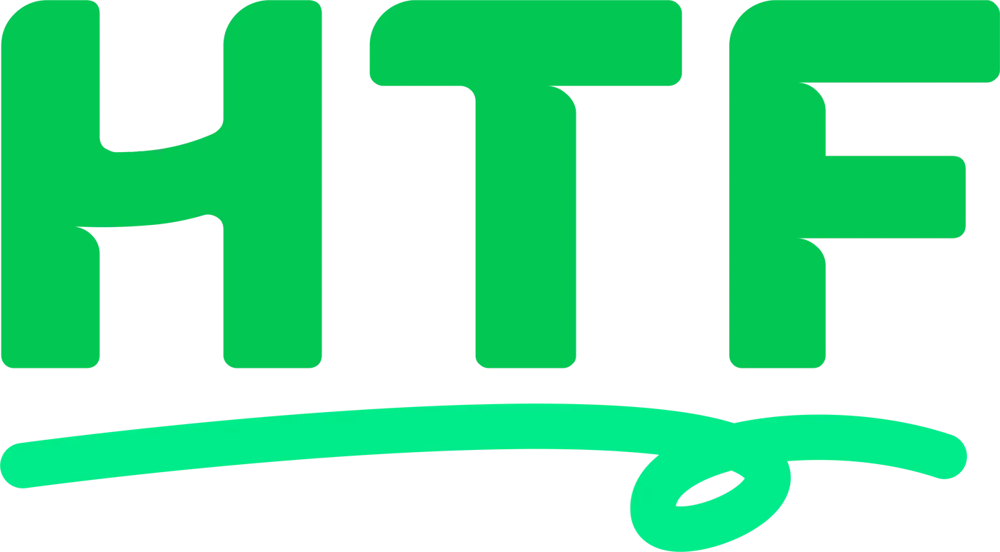
Hack the Future
Hack the Future at Purdue aims to develop software and technology-related projects for nonprofits focused on improving the community. This organization will foster a group of developers and designers passionate about using their technological skills and knowledge to help those around them. Hack the Future also seeks to create a social and friendly atmosphere among its active members and teams, as well as host open events for anyone to come and learn, hack, and have fun!
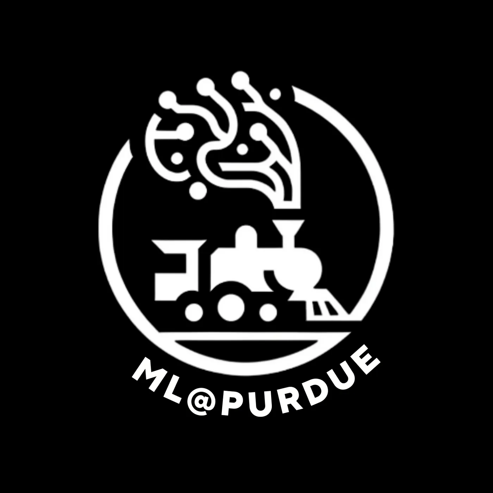
ML @ Purdue
ML@Purdue is the central club for AI/ML career growth for Purdue students. ML@Purdue supports careers in industry, research, and entrepreneurial ventures through projects and various events. The club serves to connect Purdue students to AI/ML leaders in and out of Purdue.
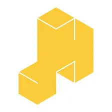
Purdue Hackers
Purdue Hackers is a group of students who make creative projects with technology, like apps, games, and art. The organization exists to promote hacker culture within the Purdue student body — exploring the limits of what is possible, in a spirit of playful cleverness. Through weekly Hack Nights and community events, Purdue Hackers fosters intellectual creativity, artistic expression, mentorship for those less experienced, and the free exchange of ideas.
BoilerMake
BoilerMake hosts Purdue’s largest hackathon over the course of MLK weekend. We see over 500 hackers and around 10 sponsors participate in this 36 hour long event giving everyone the chance to work on a project, network, and get free swag! In addition to this, you can apply to join the BM exec team. We have 5 sub teams, design, ux, dev, spons, and comm, that tackle different aspects of organizing the hackathon.
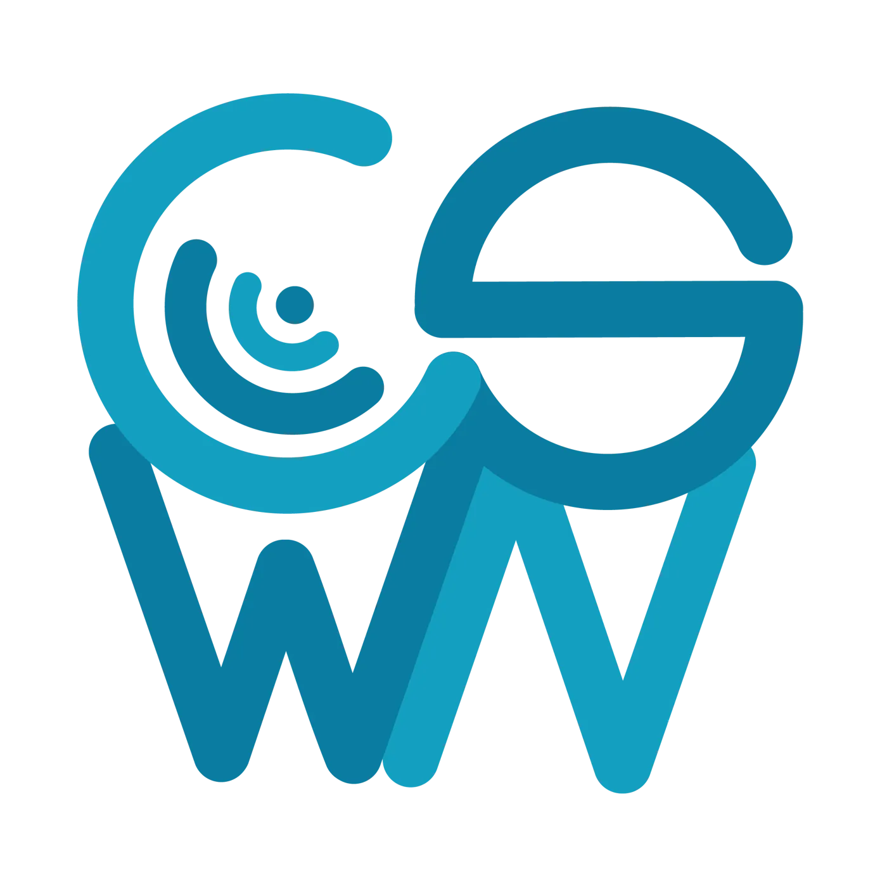
Computer Science Women's Network
CSWN is an organization at Purdue University consisting of people who are dedicated to helping women and non-binary people navigate CS/DS and the tech industry. We want to encourage those in CS/DS to stay in the field and prosper! We host networking socials, technical workshops, and community events to help members connect, learn, and grow.
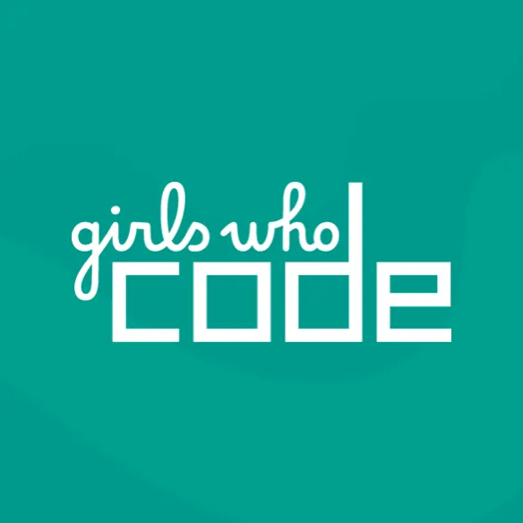
Girls Who Code
We are dedicated to closing the gender gap in technology and computer science through K-12 outreach at the middle and high schools in the Greater West Lafayette area and surrounding cities. Our outreach events consist of: meet + greet panels with students to establish a relationship and ensure familiarity, coding workshops where we help students understand a certain language, show them how they can get involved in programming, and create a project. We also hold professional events with corporate sponsors and build a close network of students and alumni through socials.
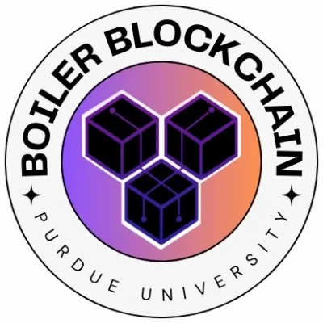
Boiler Blockchain
Boiler Blockchain is building a blockchain community at Purdue University. We give students the opportunity to gain hands-on experience with blockchain technology. Through general education, skills development, and thought leadership, we are cultivating the next generation of leaders in the blockchain space. The club also maintains relationships with notable blockchain firms to connect Purdue students with job and internship opportunities.
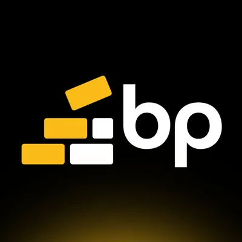
Build Purdue
buildpurdue is Purdue's student-led entrepreneurship community, helping Boilermakers turn ideas into real products through visibility, honest feedback, and hands-on experience. The club runs Nightshift, an open-door evening workspace where anyone can show up and make progress alongside other builders, and the Cohort, a selective semester-long program that gives teams structured mentorship, industry connections, and accountability. Members get peer reviews and access to events with engineers, designers, and founders — demos over decks, prototypes over promises.
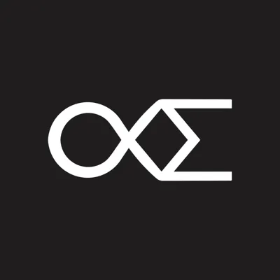
Boiler Quant
Boiler Quant brings together students interested in finance, math, and data science to explore the world of quantitative finance. Members collaborate on projects like building FinMath libraries, developing trading algorithms, tinkering with FPGAs, and creating tools for sports arbitrage and options pricing. The club prepares members for careers at top quant firms through mock interviews, trading games, and visits to leading trading firms in Chicago.
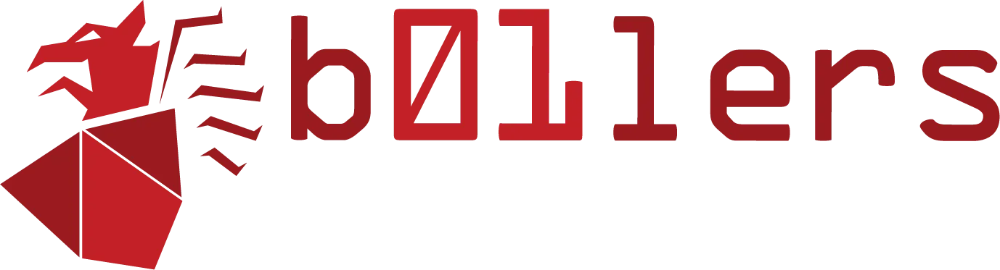
Capture the Flag (b01lers)
We are constantly learning and applying practical skills in web security, system security, reverse engineering, cryptography, and forensics to compete against other schools and teams in Capture The Flag competitions. b01lers also hosts its own public CTF each spring, and holds training sessions where members explore advanced programming and security techniques. Students of all levels from all majors are welcome.
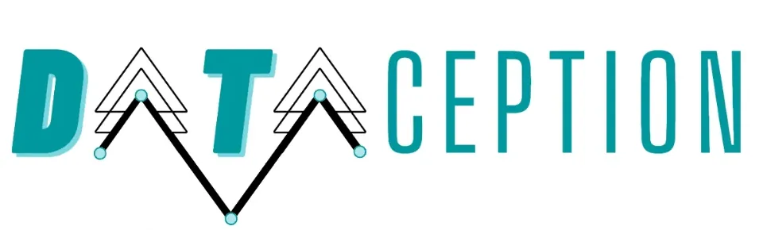
Dataception
Dataception is a Data Science and Data Visualization club that teaches you concepts from both majors by guiding you through your own projects. These projects will either be published on our website or it will be submitted to the Undergraduate Research Symposium.
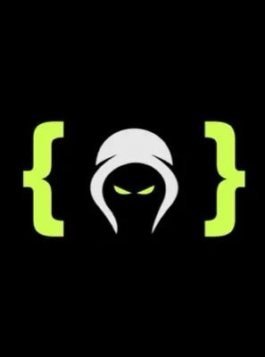
Ethical Hackers of Purdue
The mission of Ethical Hackers of Purdue is to help students of any major, including non-technical majors, understand the fundamentals of penetration testing and ethical hacking. We are beginner friendly and members of any level of experience are welcome — each week we hack into a new system guided by some of the best hackers at Purdue. Members build skills in Linux, networking, and problem solving, and the club competes in events like the National Cyber League.
Google Developer Groups
Google Developer Group on Campus Purdue is the place for developers to learn, collaborate, and grow using Google's technologies and experts. We achieve this through various workshops and team projects, covering areas like AI/ML, web, and app development. GDG on Campus Purdue University is an independent group; its activities and opinions are not linked to Google, the corporation.
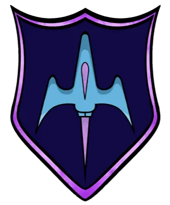
Hello World
Hello World is the largest beginner-friendly hackathon in the Midwest, and the first freshman-only hackathon in the country. Over 24 hours, first-time hackers from any major build their very first project with mentors working side by side with them, so nobody feels intimidated by technology they have never touched before. The team's vision is to build a community at Purdue around learning, sharing, and building.
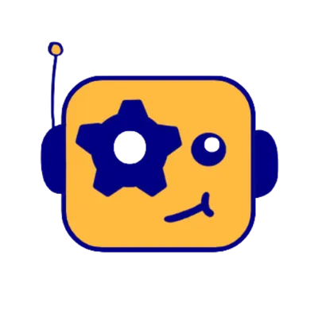
Humanoid Robot Club
The Humanoid Robot Club is a robotics community at Purdue working at the forefront of humanoid robotics, with the mission of engineering a walking humanoid robot capable of space exploration. Whether you're an experienced robotics engineer or a newcomer with a passion for robots, HRC hosts collaborative projects tailored to all skill levels. The club has taken its robot from mid-air walking in simulation to first steps on the ground, and also runs StarkHacks, a global hardware hackathon.
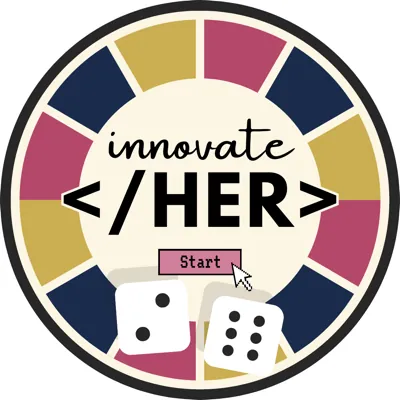
InnovateHer
InnovateHer is Purdue University's women-centric hackathon and the organization behind it, dedicated to fostering inclusivity and empowerment within technology. Through a 36-hour hackathon, workshops, and mentorship, InnovateHer creates a welcoming space for students of marginalized gender identities to learn, build, and innovate together. The event encourages everyone to recognize and create solutions for issues faced by women, and to take an active part in closing the gender gap in STEM.
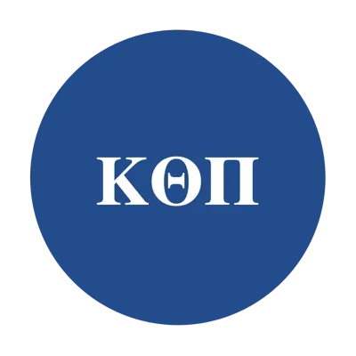
Kappa Theta Pi
Kappa Theta Pi (ΚΘΠ) is the nation's first co-ed professional technology fraternity, and this is its Purdue chapter. KTP creates bonds between students in computer science, data science, design, business, and computer engineering, and gives brothers the support and resources to pursue their interests in tech. The fraternity develops networks through professional and social growth, exposing members to career options across the technology industry.
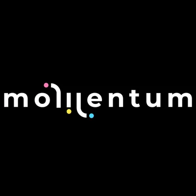
Purdue Momentum
Momentum at Purdue is a project-based, multidisciplinary student organization that bridges the gap between academics and industry by providing hands-on experience in finance, software, and engineering. Semester-long projects range from investment challenges to robotics builds to AI software development, supported by workshops, design reviews, and mentorship. Founded by international students and women in STEM, Momentum welcomes members from any major and prioritizes an inclusive, empowering environment.
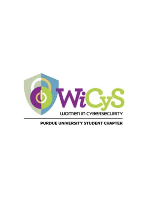
Women in Cybersecurity (WiCyS)
The mission of the Women in Cybersecurity student chapter is to build a community within Purdue University that promotes women's education, participation, and leadership in the field of cybersecurity. WiCyS is a global community of engagement, encouragement, and support, bringing together women from academia, research, and industry to share knowledge, experience, networking, and mentoring. Undergraduates and graduate students are all welcome to join.
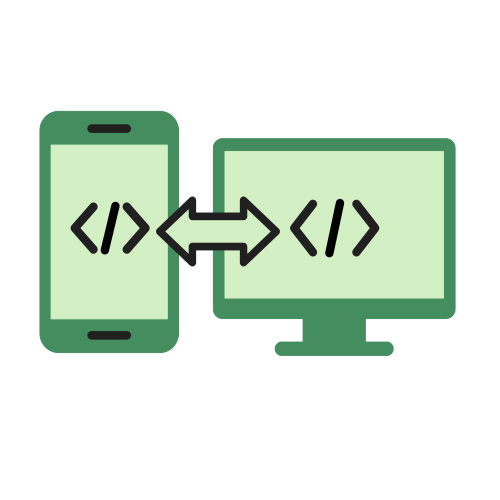
ACM SIGAPP
SIGAPP is the Special Interest Group for Applied Computing under Purdue's ACM chapter, and it exists to make apps that have a real purpose. Members build full-stack projects across Android, iOS, web, and scalable cloud backends, shipping tools that Purdue students actually use — from BoilerLaundry to BoilerRooms, a housing map for rating and reviewing dorms. Meetings double as workshops, so newer members learn the stack while contributing to a live codebase alongside experienced developers.
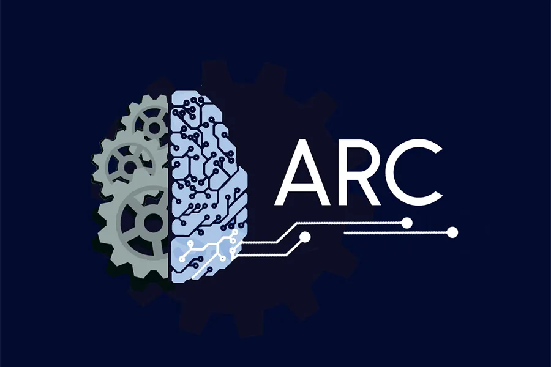
Autonomous Robotics Club of Purdue
The Autonomous Robotics Club's mission is to openly explore challenging problems within the field of autonomous robotics. Through ARC, students of any background can collaborate with an active community of shared knowledge to help create a real-world impact. ARC provides an environment for members to learn about topics such as state estimation, control algorithms, and machine learning, and new members have opportunities for leadership early on while working on projects that mix hardware and software design.
The Data Mine
The Data Mine is an interdisciplinary living-learning community that brings together students from every major to work with corporate partners, faculty, and mentors on real data science challenges. Operating under the mission of "Data Science for ALL," it requires no prior computational experience — only enthusiasm for rigorous learning — and serves over 1,700 students alongside 60+ company partners. The Data Mine Ambassadors are the student representatives who share that experience with prospective and incoming students.